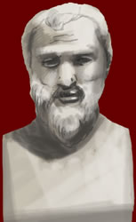

Aristophanes
c.448 - 385 BC

Aristophanes was an Athenian playwright. He wrote comedies. His plays were often set in the present day and mocked the most important people in the city.
His plays poked fun at the Athenian way of life. For example, in the Wasps a son has to build a courtroom in his house because his father has become addicted to attending trials. Aristophanes invites his audience to laugh at their own love of going to court and attending trials.
Only eleven of his plays survive. These include Clouds, Lysistrata and Women at the Thesmophoria.
|